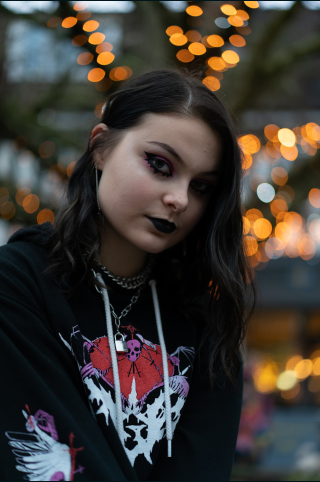
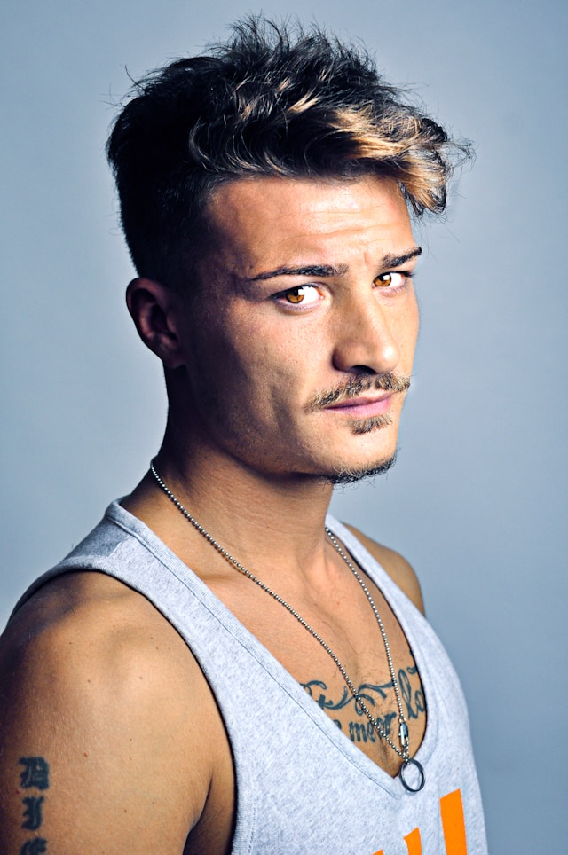

Our Artists
Sonia Vallance
Sonia is our oldest artist here at Inked by Manic. She's been an artist ever since she picked up her first pencil. Sonia specializes in highly detailed illustrations and she has more tattoos than there are states in the U.S.!
Adriano Ross
Adriano is another talented artist here at Inked by Manic. Adriano started his art journey in high freshman year of high school when he became a graffitti artist. Although Adriano is specialized in graphic design, he's up to do any tattoo.